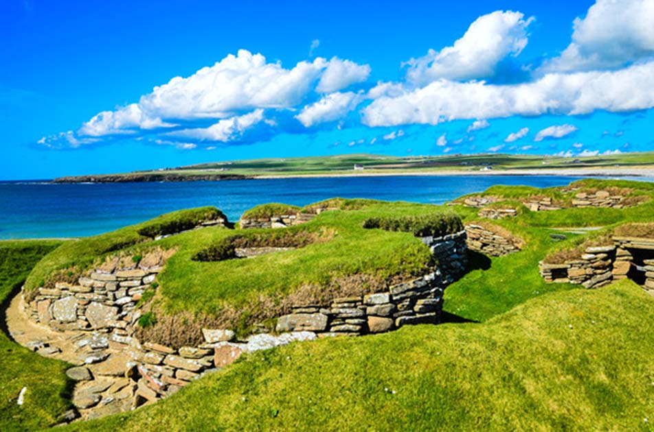
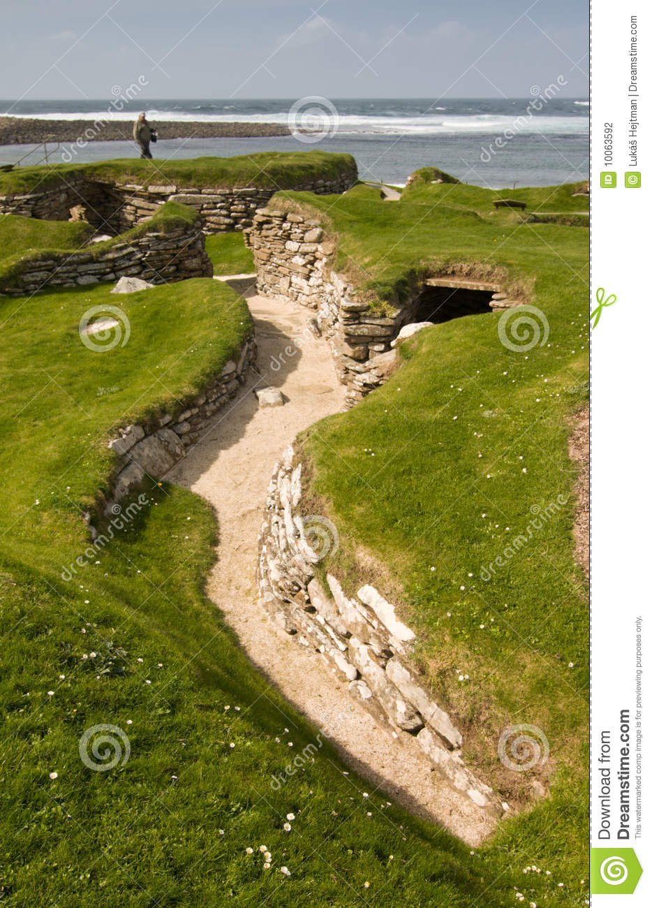

Skaros, šaliai moterims internetu| MiestoMada.lt
 Kontaktai
☆ IKI 10.31 UŽSAKYMAI UŽ 30 EUR IR DAUGIAU Į PAŠTOMATUS SU KODU "OMNIVA" PRISTATOMI NEMOKAMAI ☆
Norai ( ) Prisijungti 0 Krepšelis / Empty Prekių krepšelis × Jūsų krepšelyje nėra prekių Drabužiai Drabužiai moterims NAUJIENOS! New in Suknelės Išleistuvių suknelės Kokteilinės suknelės Proginės suknelės Vakarinės suknelės Vasarinės suknelės Marškiniai ir palaidinės Bodžiai Puošnūs bodžiai moterims Marškinėliai Marškiniai Ilgi marškiniai Palaidinės ir tunikos Palaidinės Palaidinės ilgomis rankovėmis Palaidinės vasarai Puošnios palaidinės Tunikos Megztos tunikos Paplūdimio tunikos Tunikos apkūnioms Tunikos žiemai Palaidinės Palaidinės ilgomis rankovėmis Palaidinės vasarai Puošnios palaidinės Tunikos Megztos tunikos Paplūdimio tunikos Tunikos apkūnioms Tunikos žiemai Kelnės, džinsai, šortai Džinsai Kelnės moterims Klasikinės kelnės Juodos klasikinės kelnės Languotos kelnės Odinės kelnės Plačios kelnės Sijonkelnės Kombinezonai Leginsai, tamprės Šortai Sijonai Džinsiniai sijonai Ilgi sijonai Klostuoti sijonai Languoti sijonai MINI sijonai Švarkeliai ir liemenės Liemenės Ilgos liemenės Švarkeliai Džinsiniai švarkeliai Odiniai švarkeliai Švarkeliai prie suknelės Megztiniai, golfai, kardiganai Ilgi megztiniai Kardiganai Megztiniai ir golfai Golfai Džemperiai Ilgi džemperiai Paltai ir striukės Paltai Pavasariniai, rudeniai paltai Pūkiniai paltai Vilnoniai paltai Žieminiai paltai Striukės Odinės striukės Striukės pavasariui, rudeniui Žieminės striukės Didesni dydžiai Drabužiai nėščiosioms Liemenėlės maitinančioms Suknelės nėštukėms Tamprės nėščiosioms Tunikos nėščiosioms Populiariausios prekės HOT Apatinis trikotažas Apatinis trikotažas moterims NAUJIENOS! New in Liemenėlės Push up liemenėlės Soft liemenėlės be pakietinimų Be petnešėlių, silikoninės liemenėlės Liemenėlės didelei krūtinei Moteriškos kelnaitės Apatinės kelnaitės Braziliškos kelnaitės Kelnaitės - šortukai Kelnaitės su juostele, stringai Naktiniai drabužiai Chalatai Ilgi chalatai moterims Šilkiniai chalatai Naktinukai Pižamos, komplektai Seksualūs apatiniai Aksesuarai Bodžiai, kūno kojinės, korsetai, kelnaitės Gundantys apatinių komplektai Seksualūs naktinukai Teminiai kostiumėliai Kojinės, pėdkelnės Kojinės Pėdkelnės Tinklinės pėdkelnės Figūrą formuojantys apatiniai Kelnaitės Korsetai, bodžiai, diržai Korsetai Liemenėlės Maudymosi kostiumėliai Dviejų dalių maudymosi kostiumėliai Maudymosi kelnaitės Maudymosi kostiumėliai Push up Maudymukai apkūnioms Maudymukai aukštu liemeniu Avalynė Avalynė moterims NAUJIENOS! New in Mokasinai Espadrilės Basutės, sandalai Aukštakulnės basutės Odinės basutės Aukštakulniai bateliai Aukštakulniai storu kulnu Balti bateliai Bateliai su platforma Juodi bateliai Klasikiniai bateliai Šlepetės Šlepetės per pirštą Šlepetės su kailiu Aulinukai Aulinukai su kulnu Aulinukai su platforma Žieminiai batai Sportiniai ir laisvalaikio bateliai Balti laisvalaikio bateliai Batai paaugliams Laisvalaikio batai ant platformos Raudoni kedai Slip On modelio batai Ilgaauliai Balerinos Rankinės AKSESUARAI MOTERIMS NAUJIENOS! Rankinės Delninės Didelės rankinės Juodos rankinės Klasikinės rankinės Laisvalaikio rankinės Piniginės Aksesuarai moterims Akiniai nuo saulės Kepurės, skrybėlės Beretės Komplektas Megztos kepurės Su snapeliu Žieminės kepurės Pirštinės Skaros, šaliai Šalikai Šalikai pavasariui Skaros Žieminiai šalikai Papuošalai Atsiliepimai Išpardavimas Drabužiai moterims Didesni dydžiai Džemperiai Ilgi džemperiai Kelių dalių komplektai Kelnės, džinsai, šortai Džinsai Kelnės moterims Kombinezonai Leginsai, tamprės Šortai Sportinės tamprės Marškiniai ir palaidinės Bodžiai Marškinėliai Marškiniai Palaidinės ir tunikos Megztiniai, golfai, kardiganai Ilgi megztiniai Kardiganai Megztiniai ir golfai Paltai ir striukės Paltai Striukės Sijonai Džinsiniai sijonai Ilgi sijonai Klostuoti sijonai Languoti sijonai MINI sijonai Moteriški kostiumėliai su sijonu Odiniai sijonai Sijonai apkūnioms Tiulio sijonai Suknelės Išleistuvių suknelės Kokteilinės suknelės Proginės suknelės Vakarinės suknelės Vasarinės suknelės Aptemptos suknelės Baltos suknelės Barchatinės suknelės Bordo suknelės Didelių dydžių proginės suknelės Didelių dydžių suknelės Dryžuotos suknelės Elegantiškos suknelės Gelėtos suknelės Geltonos suknelės Gipiūrinės suknelės Ilgos suknelės Juodos suknelės Kalėdinės suknelės Klasikinės suknelės Kreminės suknelės Krikštynų suknelės Laisvalaikio suknelės Languotos suknelės Megztos suknelės Mėlynos suknelės Neopreno suknelės Nertos suknelės Odinės suknelės Pamergių suknelės Pigios suknelės Pilkos suknelės Prabangios suknelės Pūstos suknelės Raudonos suknelės Šilkinės suknelės Sportinės suknelės Stilingos suknelės Suknelės atvirais pečiais Suknelės ilgomis rankovėmis Suknelės moterims virš 50 Suknelės pavasariui Suknelės rudeniui Suknelės šimtadieniui Suknelės su kutais Suknelės su tiuliu Suknelės žiemai Švarko tipo suknelės Šventinės suknelės Trikotažinės suknelės Trumpos suknelės Varpelio formos suknelės Veliūrinės suknelės Violetinės suknelės Žalios suknelės Švarkeliai ir liemenės Liemenės Švarkeliai Apatinis trikotažas Figūrą formuojantys apatiniai Kelnaitės Korsetai, bodžiai, diržai Liemenėlės Kojinės, pėdkelnės Kojinės Pėdkelnės Tinklinės pėdkelnės Liemenėlės Push up liemenėlės Soft liemenėlės be pakietinimų Be petnešėlių, silikoninės liemenėlės Liemenėlės didelei krūtinei Maudymosi kostiumėliai Dviejų dalių maudymosi kostiumėliai Maudymosi kelnaitės Maudymosi kostiumėliai Push up Maudymukai apkūnioms Maudymukai aukštu liemeniu Paplūdimio suknelės Vientisi maudymosi kostiumėliai Moteriškos kelnaitės Apatinės kelnaitės Braziliškos kelnaitės Kelnaitės - šortukai Kelnaitės su juostele, stringai Naktiniai drabužiai Chalatai Naktinukai Pižamos, komplektai Stilingi batai moterims Aukštakulniai bateliai Aukštakulniai storu kulnu Balti bateliai Bateliai su platforma Juodi bateliai Klasikiniai bateliai Mėlyni bateliai Odiniai bateliai Proginiai bateliai Raudoni bateliai Vestuviniai bateliai Aulinukai Aulinukai su kulnu Aulinukai su platforma Žieminiai batai Balerinos Balti batai Basutės, sandalai Aukštakulnės basutės Odinės basutės Batai ant platformos Batai pavasariui, vasarai Espadrilės Ilgaauliai Mokasinai Odiniai batai Pigūs batai Pusbačiai Šlepetės Šlepetės per pirštą Šlepetės su kailiu Sportiniai ir laisvalaikio bateliai Balti laisvalaikio bateliai Batai paaugliams Laisvalaikio batai ant platformos Raudoni kedai Slip On modelio batai Sportbačiai Aksesuarai Aksesuarai moterims Akiniai nuo saulės Kepurės, skrybėlės Pirštinės Skaros, šaliai Papuošalai Piniginės Rankinės Delninės Didelės rankinės Juodos rankinės Klasikinės rankinės Laisvalaikio rankinės Mini rankinės Odinės rankinės Rankinės Rankinės ant juosmens Rankinės per petį Raudonos rankinės Rudos rankinės Verstos odos rankinės Išpardavimas Avalynė Search Prisijungti 0 Krepšelis Menu Prekių filtras Pagrindinis Aksesuarai Aksesuarai moterims Skaros, šaliaiSkaros, šaliai
Filtruoti pagal
Pasirinkti filtrai: Išvalyti filtrus Rodyti prekes 81 Filter Rodoma 1-60 iš 81 prekės(-ių) Naujienos pirmos Relevance Naujienos pirmos Name, A to Z Name, Z to A Price, low to high Price, high to low In stock Random 60 12 24 36 Išvalyti viską GERAI Nauja Available Skaros, šaliaiInfinity Skara modelis 148899 BE Knit
BE Knit 148899 20,90 EUR Universalus Nauja Available Skaros, šaliaiInfinity Skara modelis 148898 BE Knit
BE Knit 148898 20,90 EUR Universalus Nauja Available Skaros, šaliaiInfinity Skara modelis 148897 BE Knit
BE Knit 148897 20,90 EUR Universalus Nauja Available Skaros, šaliaiInfinity Skara modelis 148896 BE Knit
BE Knit 148896 20,90 EUR Universalus Nauja Available Skaros, šaliaiInfinity Skara modelis 148895 BE Knit
BE Knit 148895 20,90 EUR Universalus Nauja Available Skaros, šaliaiInfinity Skara modelis 148894 BE Knit
BE Knit 148894 20,90 EUR Universalus Nauja Available Skaros, šaliaiInfinity Skara modelis 148893 BE Knit
BE Knit 148893 20,90 EUR Universalus Nauja Available Skaros, šaliaiInfinity Skara modelis 148892 BE Knit
BE Knit 148892 20,90 EUR Universalus Nauja Available Skaros, šaliaiInfinity Skara modelis 148891 BE Knit
BE Knit 148891 20,90 EUR Universalus Available Skaros, šaliaiSkara modelis 141356 Moraj
Moraj 141356 6,90 EUR Universalus dydis Available Skaros, šaliaiSkara modelis 141354 Moraj
Moraj 141354 11,90 EUR Universalus dydis Available Skaros, šaliaiSkara modelis 141353 Moraj
Moraj 141353 11,90 EUR Universalus dydis Available Skaros, šaliaiSkara modelis 141352 Moraj
Moraj 141352 11,90 EUR Universalus dydis Available Skaros, šaliaiSkara modelis 141350 Moraj
Moraj 141350 11,90 EUR Universalus dydis Available Skaros, šaliaiSkara modelis 141348 Moraj
Moraj 141348 11,90 EUR Universalus dydis Available Skaros, šaliaiSkara modelis 141347 Moraj
Moraj 141347 11,90 EUR Universalus dydis Available Skaros, šaliaiSkara modelis 141346 Moraj
Moraj 141346 11,90 EUR Universalus dydis Available Skaros, šaliaiSkara modelis 141343 Moraj
Moraj 141343 11,90 EUR Universalus dydis Available Skaros, šaliaiSkara modelis 141342 Moraj
Moraj 141342 6,90 EUR Universalus dydis Available Skaros, šaliaiSkara modelis 141341 Moraj
Moraj 141341 6,90 EUR Universalus dydis Available Skaros, šaliaiSkara modelis 141339 Moraj
Moraj 141339 6,90 EUR Universalus dydis Available Skaros, šaliaiSkara modelis 141338 Moraj
Moraj 141338 6,90 EUR Universalus dydis Available Skaros, šaliaiSkara modelis 141388 Moraj
Moraj 141388 11,90 EUR Universalus dydis Available Skaros, šaliaiSkara modelis 141387 Moraj
Moraj 141387 11,90 EUR Universalus dydis Available Skaros, šaliaiSkara modelis 141385 Moraj
Moraj 141385 11,90 EUR Universalus dydis Available Skaros, šaliaiSkara modelis 141384 Moraj
Moraj 141384 11,90 EUR Universalus dydis Available Skaros, šaliaiSkara modelis 141359 Moraj
Moraj 141359 6,90 EUR Universalus dydis Product available with different options Skaros, šaliaiSkara modelis 141358 Moraj
Moraj 141358 0,00 EUR View Universalus dydis Available Skaros, šaliaiSkara modelis 141357 Moraj
Moraj 141357 6,90 EUR Universalus dydis Available Skaros, šaliaiŠalis modelis 138885 MKM
MKM 138885 25,90 EUR Universalus dydis Available Skaros, šaliaiŠalis modelis 138884 MKM
MKM 138884 25,90 EUR Universalus dydis Available Skaros, šaliaiŠalis modelis 138883 MKM
MKM 138883 25,90 EUR Universalus dydis Available Skaros, šaliaiŠalis modelis 138882 MKM
MKM 138882 25,90 EUR Universalus dydis Available Skaros, šaliaiŠalis modelis 138881 MKM
MKM 138881 25,90 EUR Universalus dydis Available Skaros, šaliaiŠalis modelis 138880 MKM
MKM 138880 25,90 EUR Universalus dydis Available Skaros, šaliaiŠalis modelis 138879 MKM
MKM 138879 25,90 EUR Universalus dydis Available Skaros, šaliaiŠalis modelis 138878 MKM
MKM 138878 25,90 EUR Universalus dydis Available Skaros, šaliaiŠalis modelis 138877 MKM
MKM 138877 25,90 EUR Universalus dydis Available Skaros, šaliaiŠalis modelis 138876 MKM
MKM 138876 25,90 EUR Universalus dydis Product available with different options Skaros, šaliaiŠalis modelis 102778 Kamea
Kamea 102778 0,00 EUR View Universalus dydis Product available with different options Skaros, šaliaiŠalis modelis 139055 Inello
Inello 139055 0,00 EUR View Universalus dydis Available Skaros, šaliaiŠalis modelis 139276 Inello
Inello 139276 15,90 EUR Universalus dydis Available Skaros, šaliaiŠalis modelis 139273 Inello
Inello 139273 15,90 EUR Universalus dydis Available Skaros, šaliaiŠalis modelis 139272 Inello
Inello 139272 22,90 EUR Universalus dydis Available Skaros, šaliaiŠalis modelis 137558 Art of polo
Art of polo 137558 21,90 EUR Universalus dydis Available Skaros, šaliaiŠalis modelis 137556 Art of polo
Art of polo 137556 21,90 EUR Universalus dydis Available Skaros, šaliaiŠalis modelis 137555 Art of polo
Art of polo 137555 13,90 EUR Universalus dydis Available Skaros, šaliaiŠalis modelis 137553 Art of polo
Art of polo 137553 15,90 EUR Universalus dydis Available Skaros, šaliaiŠalis modelis 137552 Art of polo
Art of polo 137552 15,90 EUR Universalus dydis Available Skaros, šaliaiŠalis modelis 137249 Art of polo
Art of polo 137249 13,90 EUR Universalus dydis Išparduota Skaros, šaliaiŠalis modelis 137247 Art of polo
Art of polo 137247 13,90 EUR View Išparduota Skaros, šaliaiŠalis modelis 137246 Art of polo
Art of polo 137246 13,90 EUR View Available Skaros, šaliaiŠalis modelis 136412 BE Knit
BE Knit 136412 21,90 EUR Universalus dydis Available Skaros, šaliaiŠalis modelis 137162 Kamea
Kamea 137162 27,90 EUR Universalus dydis Available Skaros, šaliaiŠalis modelis 136414 BE Knit
BE Knit 136414 21,90 EUR Universalus dydis Available Skaros, šaliaiŠalis modelis 136413 BE Knit
BE Knit 136413 21,90 EUR Universalus dydis Available Skaros, šaliaiŠalis modelis 136411 BE Knit
BE Knit 136411 21,90 EUR Universalus dydis Available Skaros, šaliaiLoop Šalis modelis 136410 BE Knit
BE Knit 136410 18,90 EUR Universalus dydis Available Skaros, šaliaiLoop Šalis modelis 136409 BE Knit
BE Knit 136409 18,90 EUR Universalus dydis Available Skaros, šaliaiLoop Šalis modelis 136408 BE Knit
BE Knit 136408 18,90 EUR Universalus dydis 1 2Skaros, šaliai
Skaros Šalikai Šalikai pavasariui Žieminiai šalikaiNaudingos nuorodos
Kontaktai Pristatymas Prekių grąžinimas ir keitimas Parduotuvės taisyklės Privatumo politika Mano paskyra Prisijungimas TOP prekių ženklai Perkamiausios prekės Karjera | MiestoMada.ltKontaktai
UAB Mido idėjos, Įm.k. 303262822 PVM kodas: LT100008821616. Laisvės pr. 60 (17 aukštas) Darbo laikas: I - V, 9 - 16:30 val. +37065588485 info@miestomada.ltSekite mus!
MiestoMada.lt naujienlaiškis!
Turite prisijungti arba susikurti paskyrą ×Išsaugokite savo norų sąrašą vėlesniam apžiūrėjimui
Prisijungti su Facebook Neturite paskyros? Galite susikurti ją čia Prekė pridėta į norų sąrašąInformuojame, kad šioje svetainėje yra naudojami slapukai (angl. cookies). Toliau naršydami svetainėje arba paspausdami mygtuką Sutinku Jūs sutinkate su slapukų naudojimu. Savo duotą sutikimą bet kada galėsite atšaukti pakeisdami savo interneto naršyklės nustatymus ir ištrindami įrašytus slapukus. Daugiau informacijos apie slapukus galite rasti čia
Sutinku